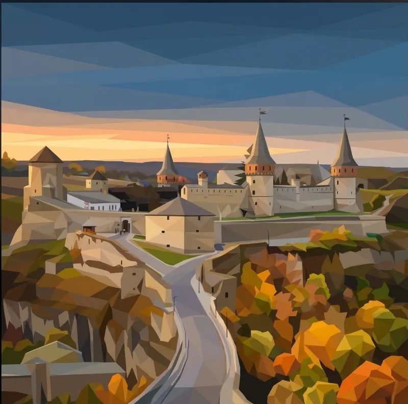
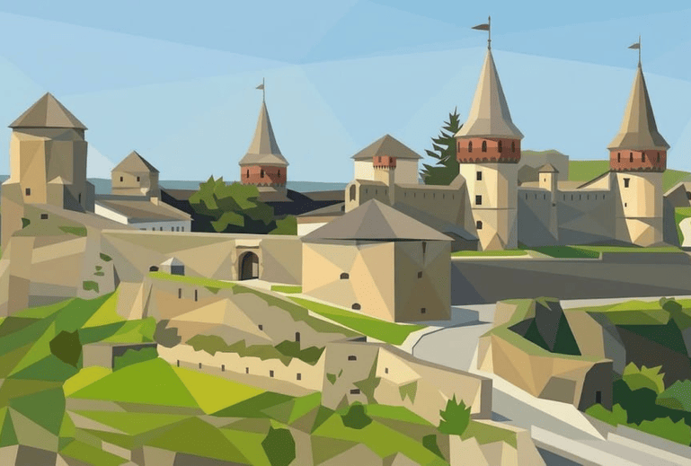
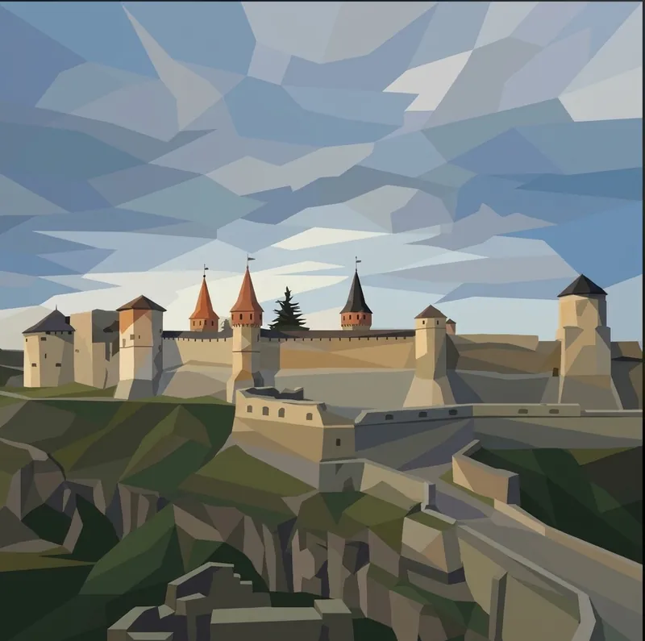

Кам'янець-Подільська фортеця
Кам'янець-Подільська фортеця — одна з найвідоміших пам'яток оборонного зодчества України. Вона стоїть на скелястому мисі, який з трьох боків оточує глибокий каньйон річки Смотрич; зі старим містом фортецю з'єднує Замковий міст.

Вежі фортеці мають власні назви: Папська (Кармалюкова), Рожанка, Лянцкоронська, Нова Східна (Тенчинська), Денна, Комендантська, Ковпак, Ляська, Водна. У Папській вежі, за переказами, тримали ув'язненим Устима Кармалюка, звідки й походить друга назва споруди.


У 1672 році місто після облоги захопило османське військо, і до 1699 року Кам'янець перебував під владою Османської імперії. Сьогодні фортеця входить до складу Національного історико-архітектурного заповідника «Кам'янець».